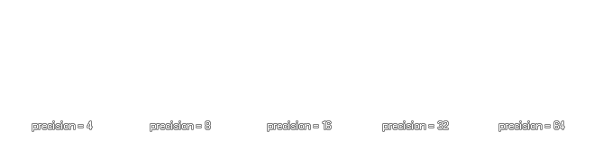

draw_set_circle_precision(precision);
| Argument | Description |
|---|---|
| precision | The precision of all circles drawn after this function is called. |
Returns : N/A
To optimise performance when drawing circles, GameMaker:Studio basically draws a polygon shape with enough sides to make it appear circular. However, depending on how big or
small you need your circles to be, you may find that changing this value can help increase the performance of your game, or make the circles look better. The precision value that you can input into
this function is the number of sides the circle polygon has, and this number can be anything between 4 and 64, but must be a number divisible by 4, with a default value of 24.

draw_set_circle_precision(12);
The above code will draw all circles using a 12 sided polygon.